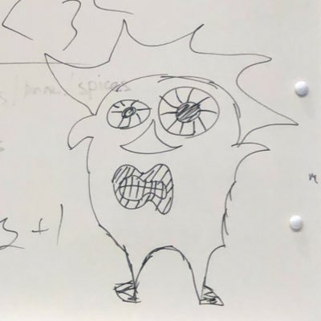

Welcome to my Portfolio
My name is ROLLEKA. I came from Nagasaki,it is the prefecture in eastest Japan.I am a first year student,and now studying in this
school, International College of Technology,Kanazawa, Ishikawa.
My name is ROLLEKA. I came from Nagasaki,it is the prefecture in eastest Japan.I am a first year student,and now studying in this
school, International College of Technology,Kanazawa, Ishikawa.
We were working on PROCON project called "safty soko" it is safty traffic supporting system designed for the area just like Seto.
At the beginning of 1st semester, we stated the problem, such as unusable design in daily life, and we made solutions.